መልካም ልደት ቃቁ. A birthday film. Walt Disney and Ub Iwerks’s Springtime (1929), the Silly Symphony where flowers and frogs dance through a rainstorm, retold as an Ethiopian flower world. The figures are flower people in white dresses with green, yellow and red borders; the picture is built the way the paintings are, with an ochre ground, thick black line, almond eyes and a caption in Ge’ez over each scene. It ends at a basket table with a berry Chantilly cake.
Nov 2026 · Watson Hartsoe · 1 min 20 s · drawn and scored in code
Dawn, the flower dance, the frogs and the crane, the rain, and the birthday. Every frame is drawn in the browser; the soundtrack is synthesized.
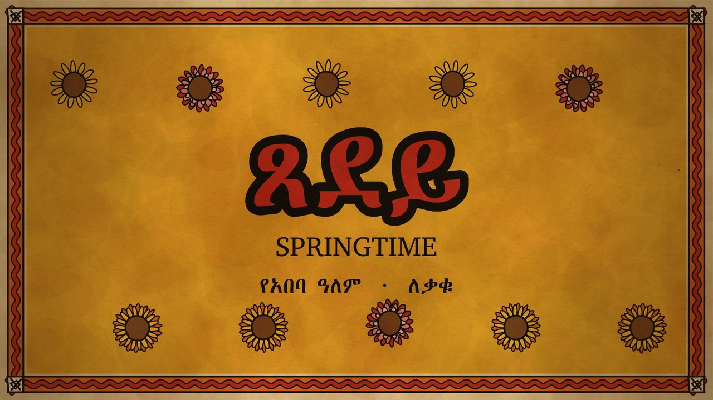
Title · ጸደይ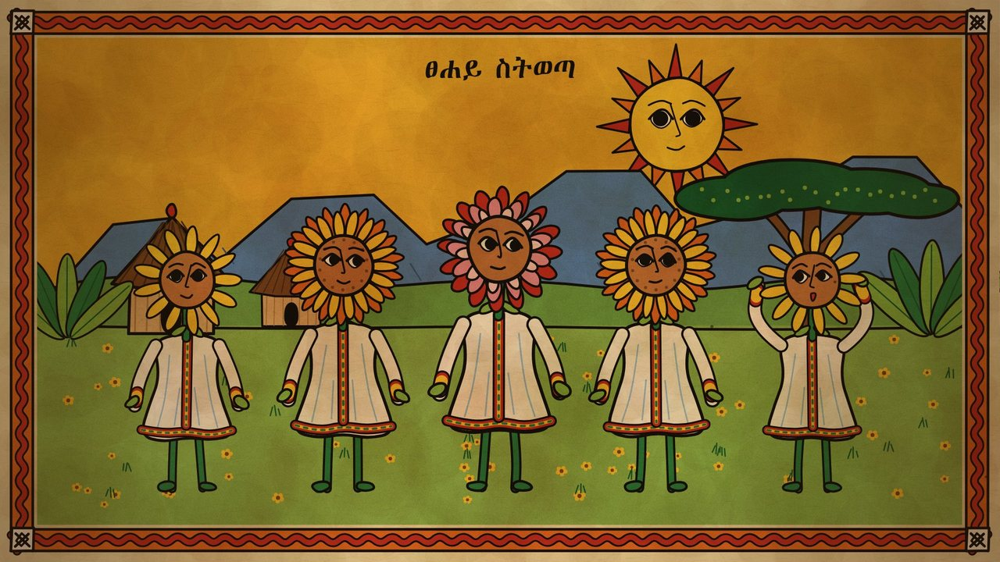
Dawn · ፀሐይ ስትወጣ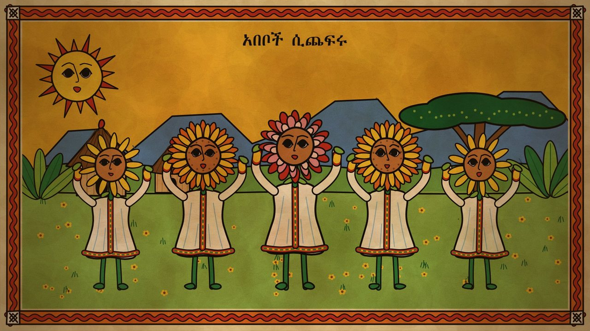
The flower dance · አበቦች ሲጨፍሩ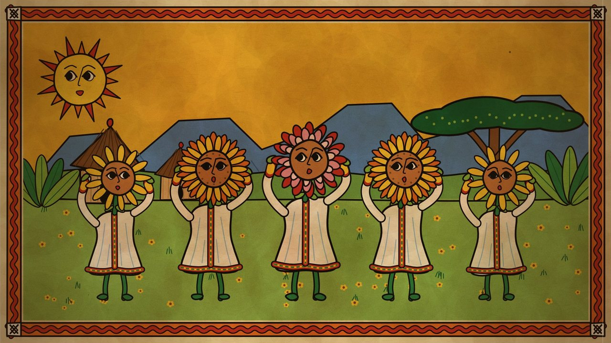
Eskista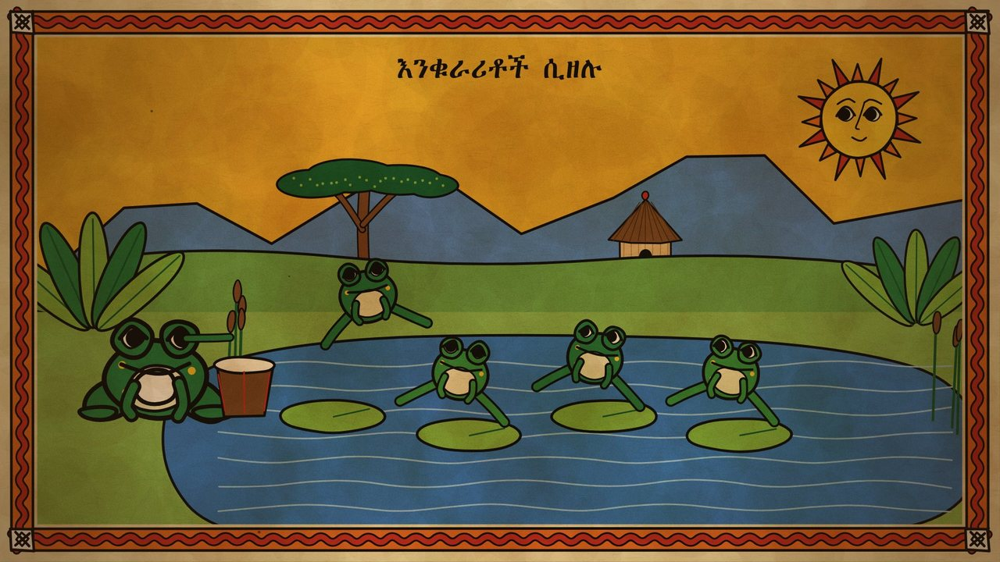
The pond · እንቁራሪቶች ሲዘሉ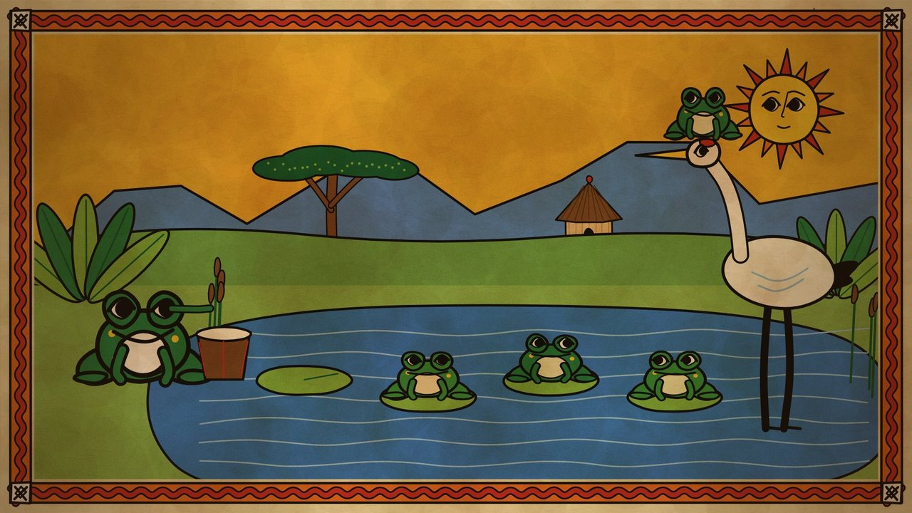
The crane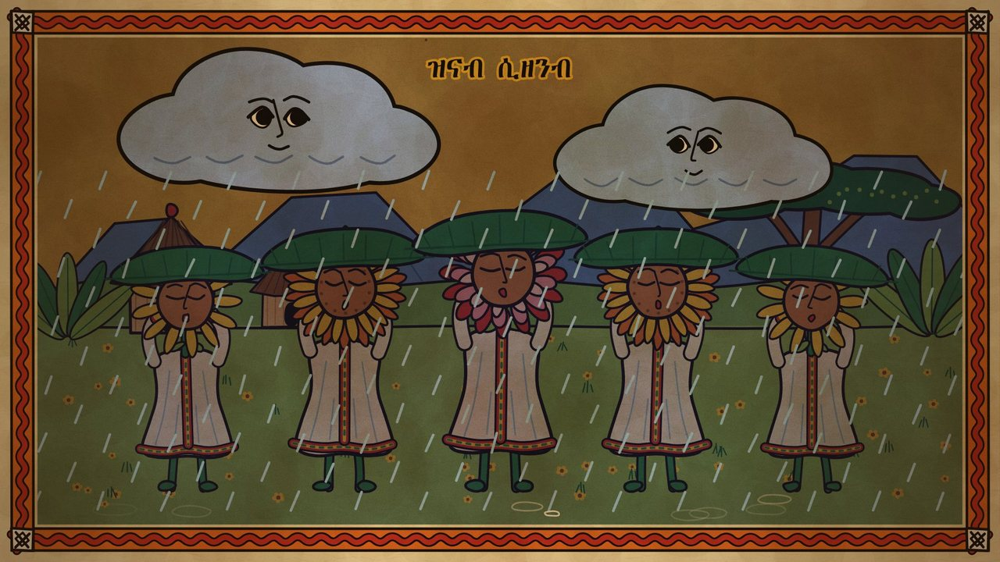
Rain · ዝናብ ሲዘንብ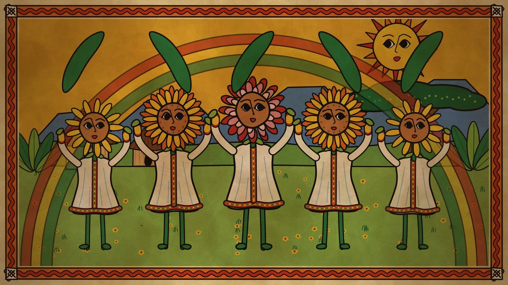
After the rain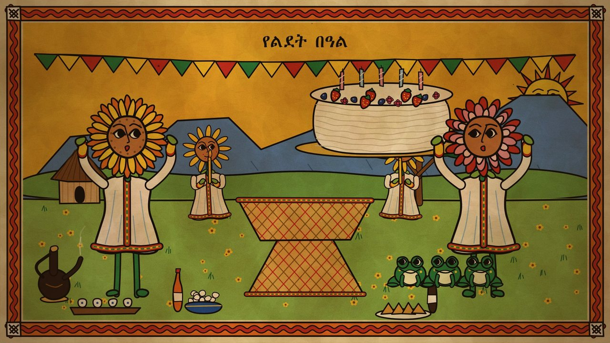
The cake arrives · የልደት በዓል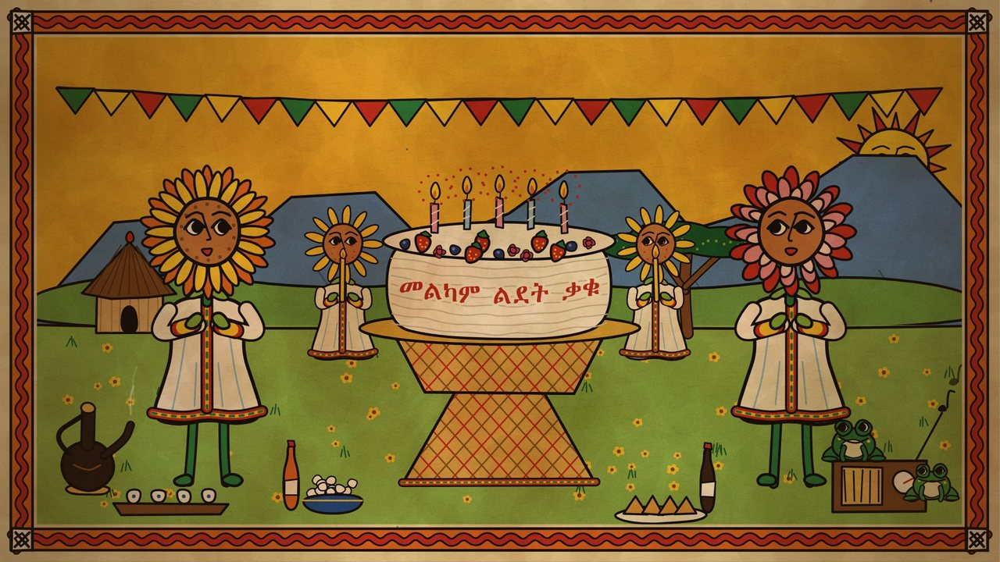
The song · መልካም ልደት ቃቁ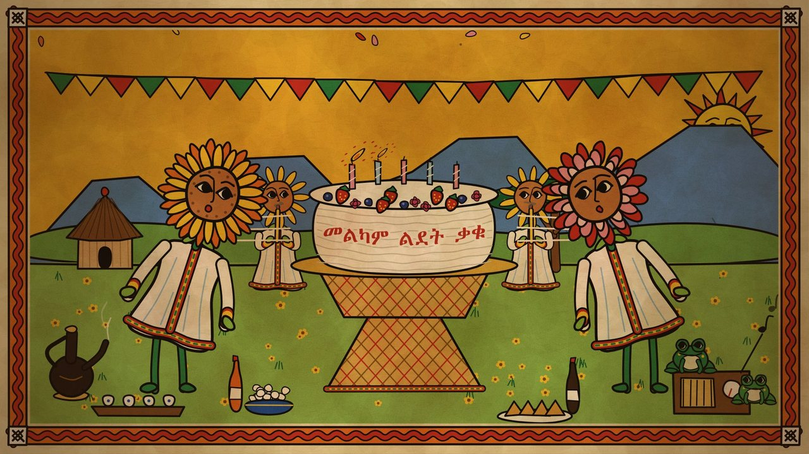
The candles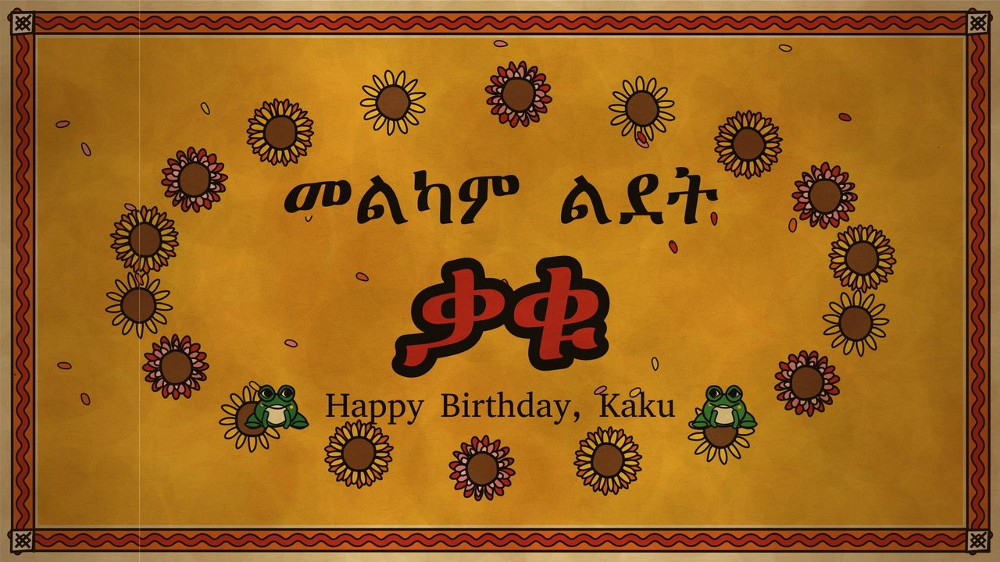
End card| Ge’ez script | Meaning | Scene |
|---|---|---|
| ጸደይ | spring | Title |
| ፀሐይ ስትወጣ | as the sun rises | Dawn |
| አበቦች ሲጨፍሩ | flowers dancing | The flower dance |
| እንቁራሪቶች ሲዘሉ | frogs jumping | The pond |
| ዝናብ ሲዘንብ | rain falling | Rain |
| የልደት በዓል | birthday celebration | The cake arrives |
| መልካም ልደት ቃቁ | happy birthday, Kaku | The song |
| የአበባ ዓለም · ለቃቁ | flower world · for Kaku | Title |